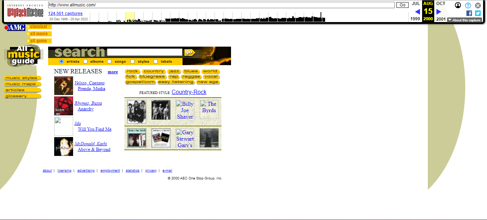

Only four of the websites were active in 2000, AllMusic, DIAMM, Last.fm, and MusicBrainz. On the Wayback Machine, Last.fm did have saves from 2002-2003, but attempting to go to them would result in a redirect error on the Wayback Machine, which is why the screenshot for Last.fm is from 2004.
The use of dynamic HTML was a huge element of website design in the late 90's and into the 2000's, even as CSS began to be used instead. Websites began to be interactive, which is reflected in all of the websites below.

Of the four websites, AllMusic was designed to be the most eye-catching to the user. The genre buttons allowed users to identify with terms they already knew if they wanted to browse, and by featuring new releases as well as a featured genre, the user could understand that if they needed to, they could specifically search for an album or an artist if they did not want to just browse. Other elements that websites may put importance on, such as about and advertising were instead delegated to the footer, as AllMusic most likely wanted the user to focus on searching for information, and if they wanted to learn about the website itself, they could easily navigate if needed.
DIAMM's website at the time is a quintessential late 90's/early 2000s website. Utilizing a table-based layout, DIAMM's navigation was separated into two separate sidebars, with the first focusing on navigating the content, and the second focusing on navigating information about the project. By keeping the navigation labels to only one or two words, while it may seem straightforward, it can actually be quite confusing to a user who is not familiar with how the project operates. The user would then have to navigate to each second-level page, and then remember what those navigation labels stand for after leaving the page, which can create recall issues.
The colors are meant to be bright and eyecatching, but because of the color combination, they can actually cause eyestrain instead. the utilization of a site map, instead of a search bar, actually fits the scope of content at the time, as most likely the project was not that large, and a site map could properly encompass all the content on the website.
Due to the redirect error, this first screenshot is from 2004 Last.fm website. With the website in its infancy, the website only featured the most important things a user would need, such as the search bar and the ability to log in and register. The announcements page is also a feature of the early web, where website managers would keep their users up to date on what was going on with the website as it was happening. The transparency was a way to keep users in the loop and answer questions any users may have about the new website.
MusicBrainz's inaugural website would lay the foundation for years to come. The color scheme was simple but eyecatching, and the branding choices were obvious and fitting for the company. While the choice of navigational labels could have been better, as the user would have to click on each to understand some, the most important ones, such as Home, Introduction, and Search were straightforward, though it could be confusing why there were two separate navigation choices for searching. Having the server stats on the side was a unique feature, but due to the nature of the website, it fits what the database wanted to accomplish, and could show users right away that the database was growing.